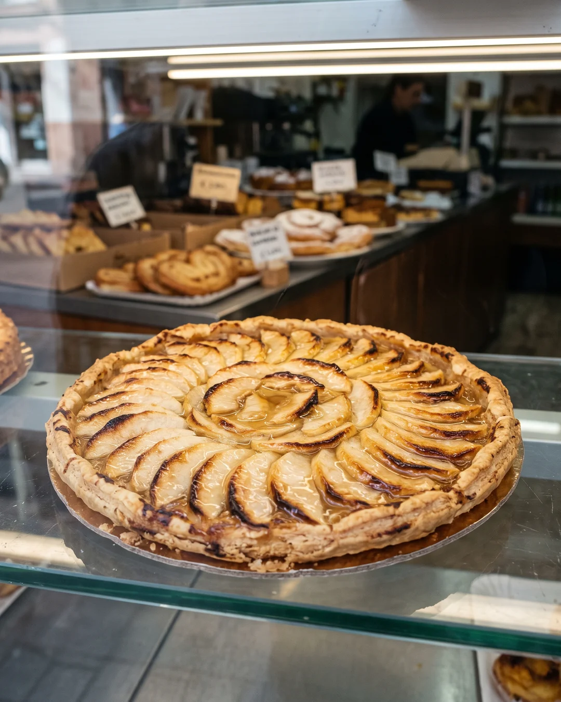
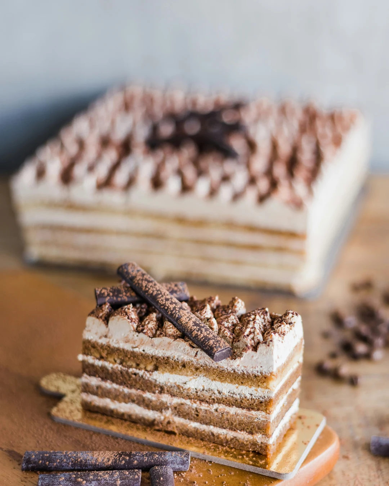
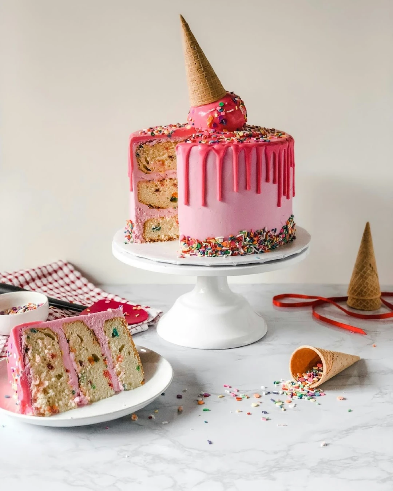

Caso n.º 20 · Tartas
Sobre este caso
El caso n.º 20 está cerrado. Fue el caso diario del 20 de noviembre de 2026 y su tema fue Tartas. Los detectives de aquel día tuvieron dos retos: cinco imágenes que clasificar en fotografías reales y generadas por IA, y cinco afirmaciones de una frase que clasificar en datos y bulos.
- Imágenes generadas por IA: 2 de 5
- Bulos: 3 de 5
Aquí tienes todas las respuestas. Cada imagen generada por IA trae el prompt que la creó, y cada afirmación, la verdad que hay detrás y los detalles que merece la pena recordar, para que compruebes qué se te escapó.
Uno de los bulos: «La Agencia Espacial Europea cocinó un bizcocho con forma de esfera perfecta a bordo de la ISS.» La verdad: La ESA no cocinó ese bizcocho; en diciembre de 2019, unos astronautas hornearon las primeras galletas en el espacio.
¿Quieres afinar la vista? Lee nuestra guía para detectar imágenes de IA o nuestra guía para detectar un bulo y luego juega el caso de hoy.
Imágenes
-
Imagen 1

IA
La confesión del sospechoso
Una tarta de manzana en el mostrador de una pastelería de barrio, con las láminas de manzana brillantes de almíbar y algunas quemadas en los bordes; fondo de otras bandejas desenfocado.
-
Imagen 2
REAL
Fotografía real
-
Imagen 3

REAL
Fotografía real
-
Imagen 4

REAL
Fotografía real
-
Imagen 5

IA
La confesión del sospechoso
Una tarta de queso casera recién cortada sobre una tabla de madera en una cocina, con la superficie algo tostada y agrietada, migas sobre la tabla y un cuchillo manchado al lado; luz de ventana lateral, 50 mm a f/2.8.
¿Dato o Bulo?
-
Afirmación 1
BULO «La Agencia Espacial Europea cocinó un bizcocho con forma de esfera perfecta a bordo de la ISS.»
La ESA no cocinó ese bizcocho; en diciembre de 2019, unos astronautas hornearon las primeras galletas en el espacio.
- Usaron un horno experimental de gravedad cero.
- El horno lo crearon Nanoracks y Zero G Kitchen.
-
Afirmación 2
BULO «Una pastelería de Tokio patentó en 2025 un glaseado brillante con enzimas sintéticas.»
No existe tal patente; el glaseado espejo brilla gracias al control de la temperatura y a ingredientes sencillos.
- Se hace con gelatina, agua, azúcar, leche condensada y chocolate fundido.
- No necesita enzimas sintéticas ni tecnología futurista.
-
Afirmación 3
DATO «Soplar las velas de cumpleaños esparce gotas que aumentan un 1.400 % las bacterias del glaseado.»
Un estudio de la Universidad de Clemson de 2017, dirigido por Paul Dawson, halló ese aumento frente a una tarta sin soplar.
- Las microgotas de saliva se posan en la superficie de la tarta.
-
Afirmación 4
DATO «La tarta más alta del mundo medía más que el Cristo Redentor.»
En 2008, una escuela de cocina de Yakarta, en Indonesia, construyó una tarta navideña de 33 m, récord Guinness.
- El Cristo Redentor de Río mide 30 m, sin contar el pedestal.
- La tarta era 3 m más alta que la estatua.
-
Afirmación 5
BULO «Luis XV prometió a un pastelero las escrituras de un castillo en Burdeos si replicaba el diseño de un pastel.»
No hay registro histórico de tal recompensa; la historia del castillo a cambio de una tarta es pura invención.
- La repostería francesa avanzó mucho con Luis XV.
- Su suegro, el rey polaco exiliado, popularizó el baba al ron.